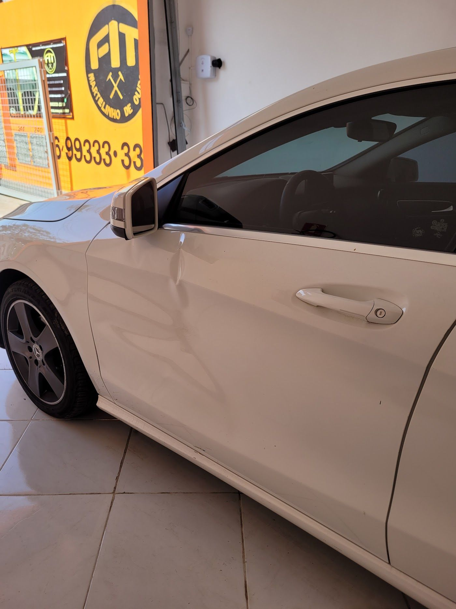
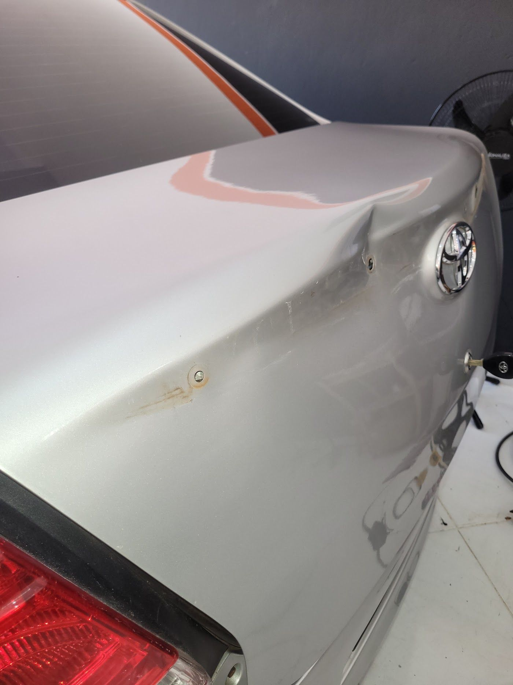

Início / Martelinho de ouro
Especialidade 01
Martelinho
de ouro
O amassado sai por dentro, sem lixar, sem massa e sem tinta. A pintura original fica, e o carro não perde valor na revenda.
O que reparamos
Do amassado de estacionamento
ao granizo
Portas e laterais
Batidas de porta no estacionamento, vincos e ondulações na lateral do carro.
Capô, teto e porta-malas
Amassados em superfícies amplas, inclusive em pontos de difícil acesso.
Para-lamas e colunas
Batidinhas nas quinas e colunas, que tiram a beleza do carro.
Granizo
Muitos amassados de uma vez, recuperados sem precisar repintar a peça.
Passo a passo
Orçamento por foto,
sem compromisso
- Fotografe o amassadoUma foto de perto e uma de longe, com boa luz.
- Mande pelo WhatsAppA gente avalia e responde com valor e prazo.
- Agende a entrega do carroNo dia e horário que for melhor para você.
- Retire sem marcasCom a pintura original preservada.

Dúvidas frequentes
Antes de trazer o carro
Precisa pintar depois do martelinho?
Não. A técnica trabalha a lataria por dentro, preservando a pintura original. Por isso o carro mantém a cor de fábrica e o valor de revenda.
Todo amassado dá para tirar com martelinho?
Na maioria dos casos, sim. Quando a pintura está trincada ou a peça está muito danificada, avaliamos e indicamos o melhor caminho, com transparência.
Quanto tempo leva?
Depende do tamanho e do local do amassado. O prazo é combinado na avaliação, antes de começar, e cumprido.
Como faço o orçamento?
Mande uma foto do amassado pelo WhatsApp. Você recebe o valor sem precisar sair de casa.
Quem já confiou o carro à FIT
O que dizem no Google
Confesso que não acreditei muito no vídeo anúncio que assisti, pela perfeição e resultado. Porém fiquei surpreso com a qualidade do serviço e o preço bem justo. Fidelizou um cliente!
O atendimento é excepcional, a equipe é muito profissional e o serviço é realizado com muita perfeição nos detalhes. Meu veículo ficou como novo, dentro do prazo combinado.
Superou as minhas expectativas em relação às pesquisas com outras oficinas! Profissionalismo, educação, honestidade e pontualidade com o trabalho executado com excelência.
FIT Martelinho de Ouro
Aquele amassado não precisa ficar aí
Mande a foto do amassado ou escolha um horário. A gente responde pelo WhatsApp.